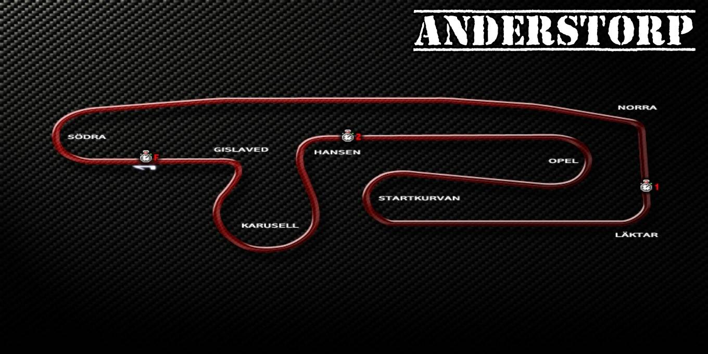

Circuitos
Listado de circuitos que forman parte del videojuego.
🏁 Circuito de Monza

- Ubicación: Monza, Italia.
- Inauguración: 1922.
- Longitud actual (circuito GP): ~5.793 km.
- Número de curvas: 11 (curvas rápidas y chicanas).
- Apodo: "El Templo de la Velocidad".
- Características:
- - Uno de los circuitos más rápidos del mundo.
- - Rectas largas y curvas de alta velocidad.
- - Variantes históricas como el óvalo con peraltes.
🏆 FIA GT Championship en Monza
Monza aparecio en la FIA GT Championship entre 1997 hasta el 2009 cuando fue el ultimo año de la categoria, Monza era una sede habitual en el calendario, destacándose por sus emocionantes carreras y gran velocidad.
Participación destacada:
- - Monza figuró regularmente desde finales de los 90 hasta 2009.
- - La carrera solía disputarse entre abril y mayo.
- - Popular por favorecer autos con gran velocidad punta.
Ediciones destacadas:
- 2004: Debut del Maserati MC12 GT1.
- 2007: Victoria de Vitaphone Racing Team con el Maserati MC12.
- 2009: Última carrera del FIA GT en Monza bajo el formato original.
📸 Momentos destacados y curiosidades
- - Batallas memorables entre AF Corse, Vitaphone Racing, BMS Scuderia Italia y otros.
- - Sonido inconfundible de los V12 y V10 en las largas rectas.
- - Requiere configuración aerodinámica de baja carga, lo que complica el paso por curvas técnicas.
🎥 ¿Dónde ver más?
Si te interesa revivir estas carreras históricas, puedes encontrarlas en:
- YouTube: Busca FIA GT Monza 2007, Maserati MC12 Monza, etc.
- GT World Challenge: Sitio oficial (sucesor del FIA GT Championship).
- Revistas: Autosport, Motorsport Magazine y otras publicaciones especializadas.
🏁 Circuito de Anderstorp
- Nombre oficial: Scandinavian Raceway.
- Ubicación: Anderstorp, Suecia.
- Inauguración: 1968.
- Longitud: ~4.025 km.
- Número de curvas: 8.
- Curiosidad: Tiene una recta principal que también funciona como pista de aterrizaje de aviones.
- Características:
- - Trazado plano, técnico y poco convencional.
- - Curvas lentas combinadas con largas rectas.
- - Requiere buen equilibrio entre velocidad punta y tracción en curva lenta.
- - El clima puede ser inestable, lo que afecta la estrategia de carrera.
🏆 FIA GT Championship en Anderstorp
Anderstorp fue parte del calendario de la FIA GT Championship en varias ediciones, especialmente entre 2002 y 2008. Era una de las pocas sedes escandinavas del campeonato.
Ediciones destacadas:
- 2004: Duelo intenso entre Ferrari 550 Maranello y Saleen S7-R..
- 2006: Victoria de Vitaphone Racing Team con el Maserati MC12 en condiciones mixtas.
- 2007: Carrera caótica por lluvia; destacada actuación de Phoenix Racing.
📸 Momentos destacados y curiosidades
- - Fue sede del GP de Suecia de Fórmula 1 en los años 70.
- - El trazado parece simple, pero castiga errores: las escapatorias son pequeñas.
- - Alta exigencia sobre los frenos, especialmente en la horquilla tras la recta principal.
- - Conocido por su entorno boscoso y poca altitud, da un aire “retro” muy particular.
🎥 ¿Dónde ver más?
- YouTube: Buscá FIA GT Anderstorp 2006, Maserati MC12 Anderstorpo Saleen GT1 Sweden.
- GT World Challenge: Sitio oficial (sucesor del FIA GT Championship).
- Revistas: Motorsport Total, RacingSportsCars, Autosport Archives.
🏁 Circuito de Spa Francorchamps


- Ubicación: Stavelot, Bélgica.
- Inauguración: 1921 (moderno desde 1979).
- Longitud: ~7.004 km.
- Número de curvas: 19.
- Apodo: "La Montaña Rusa de las Ardenas".
- Características:
- - Trazado técnico y fluido con gran variedad de curvas.
- - Elevaciones pronunciadas, como la subida de Eau Rouge y Raidillon.
- - Mezcla de curvas rápidas (Blanchimont, Pouhon) y técnicas (La Source, Les Combes).
- - Exige aerodinámica balanceada y buena gestión de neumáticos.
🏆 FIA GT Championship en Spa
Sede de las 24 Horas de Spa, que se integraron al campeonato de la FIA GT Championship desde 2001. Es considerada la carrera más prestigiosa del calendario GT.
Ediciones destacadas:
- 2004: Victoria del BMS Scuderia Italia (Ferrari 550 Maranello).
- 2005-2008: Dominio de Vitaphone Racing Team con el Maserati MC12.
- 2009: Última aparición de los GT1 originales en Spa antes de la reestructuración.
📸 Momentos destacados y curiosidades
- - Eau Rouge y Raidillon son considerados unos de los sectores más desafiantes del automovilismo.
- - Cambios climáticos repentinos son comunes, afectando cada parte del circuito de forma distinta.
- - Las 24 Horas de Spa suelen tener grillas de más de 50 autos.
- - En GTR2, Spa es uno de los trazados favoritos por su longitud y variedad técnica.
🎥 ¿Dónde ver más?
- YouTube: Buscá FIA GT Spa 2005, FIA GT Spa 2004o BMW M3 GTR Spa.
- GT World Challenge: Sitio oficial (sucesor del FIA GT Championship).
- Revistas: Endurance-Info, Motorsport Magazine, DailySportsCar.